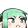
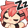

×
Copy emote code
Subscribe to get emote (
$4.99
)
Subscription (Tier 1)
Get
nyacchShy
nyacchBless
nyacchPls
nyacchLove
nyacchPout
nyacchPoker
nyacchHi
nyacchHype
nyacchPat

nyacchLurk
nyacchThink
nyacchSmug
nyacchCop
nyacchSweat
nyacchLUL
nyacchDead
nyacchPop
nyacchMad
nyacchSad
nyacchShrug
nyacchLewd
nyacchMusic
Subscription (Tier 2)
Get

nyacchNap
Subscription (Tier 3)
Get
nyacchGiggle
BetterTTV
nyacchS
nyacchSip
shoKiss
minKiss
Woomy
FrankerFaceZ
AYAYA
Could not find any emotes for this channel
Based on data by
Twitch, Twitchemotes.com for sub emotes
and
BetterTTV for BTTV emotes
and
FrankerFaceZ for FFZ emotes